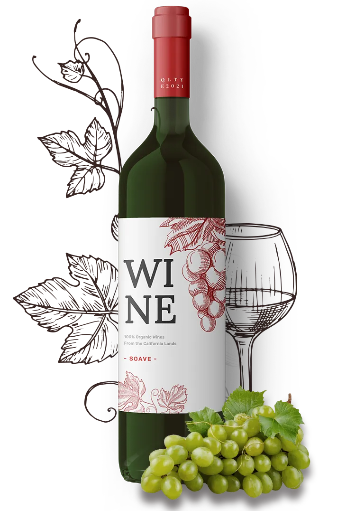

100% natural
What Makes Our Wines Special

We use only 100% natural grapes, no impurities.
100% natural
We use only 100% natural grapes, no impurities.

We make wine from selected grapes of the best varieties.
In the production of wine, we use only natural ingredients.
Grapes for wine production are grown in an ecologically clean place.
We do not add alcohol or any additives to increase ABV.
Before bottling, the wine is aged in special oak barrels.
From Chardonnay to Syrah, we offer classic wines that everyone likes.